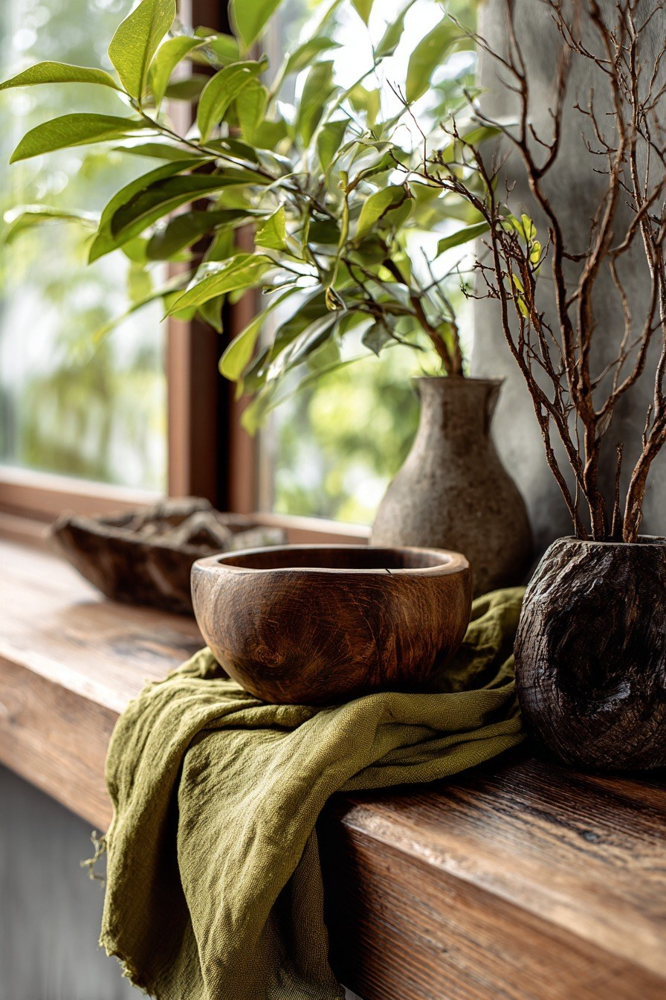
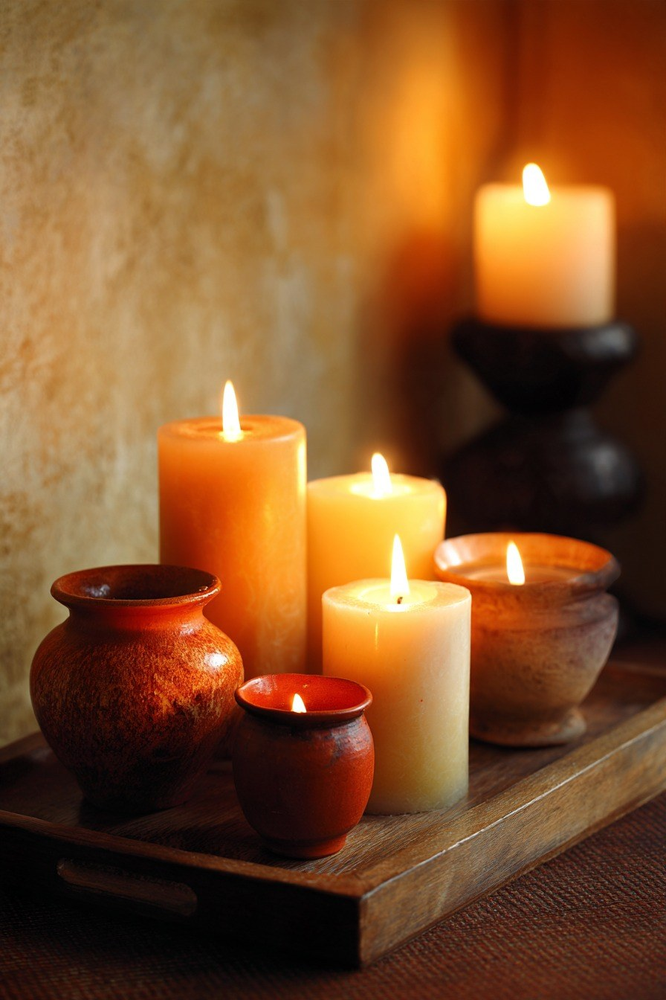
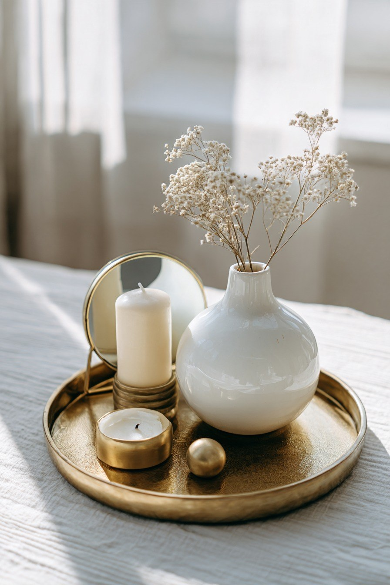
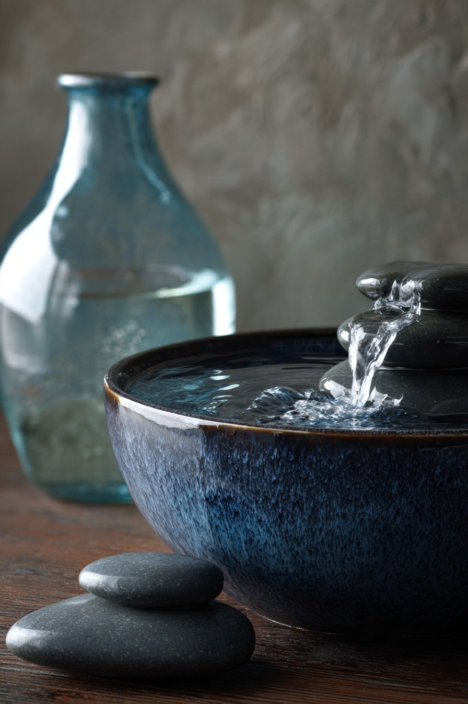
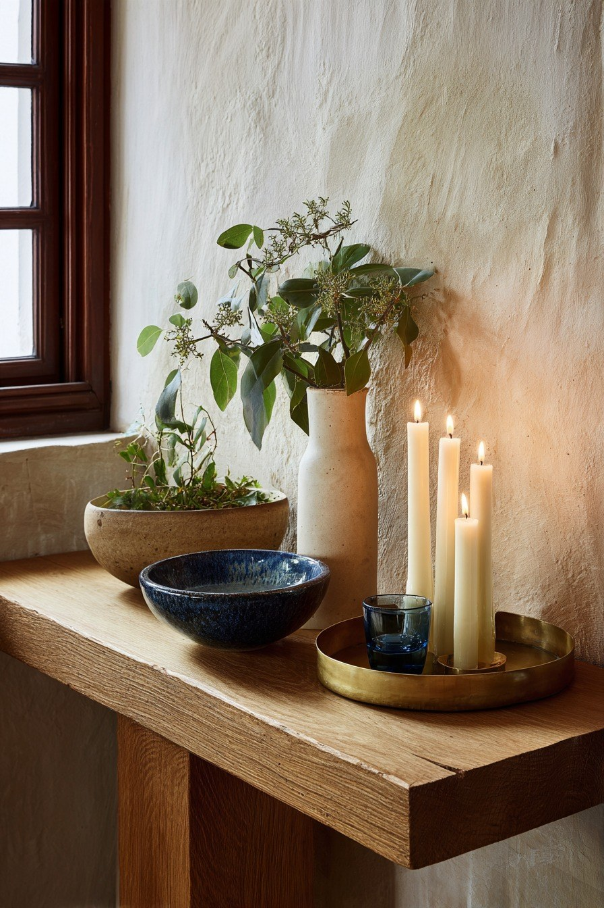

The Five Elements of Feng Shui: What They Mean and How to Place Them at Home
Wood, fire, earth, metal and water: what each element stands for, where it belongs in a home, and which small objects bring it in.

Feng Shui is the Chinese art of arranging a home so that its energy, called chi, moves and settles well. One of its oldest tools is the five elements: wood, fire, earth, metal and water.
Every object in a room belongs to one of them, through its colour, its shape or its material. A room feels balanced when all five are present and none of them shouts. This guide walks through each element, what it stands for, where it traditionally belongs in a home and which small objects bring it in.
How to recognise an element
An object can carry more than one element at once. A terracotta pot is earth by its material and fire by its colour. A round brass tray is metal by shape and by material. A wooden bowl on green linen is wood twice. That is why a few small things on a shelf, a table or a windowsill can balance a whole corner.
Wood
What it stands for: growth, creativity, renewal and new ideas. Wood is the energy of spring, of something pushing upward. In Feng Shui it purifies chi and sends it onward.
Where it belongs: traditionally in the east and southeast of a home, the areas linked to family, health and growth.
Colours and shapes: green and teal, and tall vertical forms such as columns, stems and stripes.
How to bring it in: living plants rather than artificial ones, a carved wooden bowl, a vase of branches, green linen, a wooden tray or bench. A leafy plant near a desk is the classic example.

Too much: the room feels busy and unsettled. Too little: it feels flat, as if nothing is growing.
Fire
What it stands for: warmth, passion, visibility and transformation. Fire is the strongest of the five elements and the energy of summer.
Where it belongs: traditionally in the south, the area linked to fame and recognition.
Colours and shapes: red, orange and warm yellow, with triangles and pointed forms.
How to bring it in: candles, a lamp with a warm shade, a fireplace, one red or orange accent such as a cushion or a ceramic piece. A cluster of candles of different heights works better than a single one.

Too much: the room feels restless and sharp, so choose one bold accent instead of many, and keep fire gentle in rooms for rest.
Earth
What it stands for: stability, grounding, home and nourishment, the feeling of being held. Earth belongs to the turn between summer and autumn, a season of ripeness and rest.
Where it belongs: traditionally in the centre of the home and in the northeast and southwest.
Colours and shapes: brown, beige, sand and ochre, with squares, rectangles and low, flat forms.
How to bring it in: stoneware bowls, clay pots, natural stone, a thick rug, old books, antique pottery and plaster surfaces. A heavy stone bowl or clay pot is a good anchor for a room that feels scattered.
Too much: the room feels heavy and slow, so pair it with lighter elements. Too little: it feels scattered and unanchored.
Metal
What it stands for: clarity, focus, order and clear thinking. Metal is the energy of autumn, of letting go and of sharpening what remains. It also carries energy from one area to another.
Where it belongs: traditionally in the west and northwest, the areas linked to creativity, children and helpful people.
Colours and shapes: white, grey, silver, gold and brass, with circles, ovals and spheres.
How to bring it in: a round metal tray, a brass candle holder, a small round mirror in a thin frame, metal vases, picture frames, wind chimes, a white glazed vase.

Too much: the room feels cold and hard. Warm it with wood and earth.
Water
What it stands for: calm, reflection, flow and renewal, and traditionally career and money. Moving water lets go of what you no longer need, and still water calms the energy around it. Water is the energy of winter, of depth and rest.
Where it belongs: traditionally in the north, the area linked to career and life path.
Colours and shapes: black, dark blue and deep teal, with wavy and curving lines.
How to bring it in: a small indoor fountain, a glass vase of clear water, a dark blue glazed bowl, a calm picture of a lake or a pond. Choose still or gently moving water over crashing waves.

Too much: the room feels unsettled and cold. Keep water small and gentle.
How the elements work together
The elements are not separate. They feed and they hold each other in two cycles.
The productive cycle. Wood feeds fire. Fire leaves ash, which becomes earth. Earth forms metal. Metal carries water. Water nourishes wood. If an element is missing in a room, add it together with the element that feeds it. To strengthen fire, for example, add wood.
The controlling cycle. Wood parts earth. Earth absorbs water. Water quenches fire. Fire melts metal. Metal cuts wood. If one element is too strong in a room, add the one that controls it. Too much fire calls for water. Too much wood calls for metal.
How to balance a room, step by step
1. Take stock. Look at the main objects in the room and name the element of each by colour, shape and material.
2. Find the gaps. Most rooms lean on one or two elements and miss the others.
3. Add small things. A plant, a candle, a clay bowl, a metal tray or a dark blue glass bowl is enough. No renovation is needed.
4. Pair friendly neighbours. Put elements that feed each other next to each other, such as wood beside fire or metal beside water.
5. Step back and feel the room. Change one thing at a time, then see how it feels.
A simple example: a red flowerpot with white tulips on a wooden table already holds four elements. The red pot is fire, the clay is earth, the green stems are wood and the white petals are metal. Add a small glass dish of water and one corner holds all five.

Moderation matters more than completeness. Balance does not mean five equal amounts. It means that no element is missing and none is overpowering, so the room feels calm when you walk in.